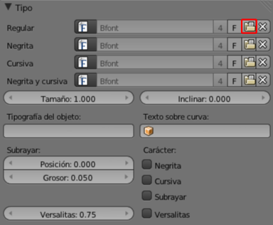
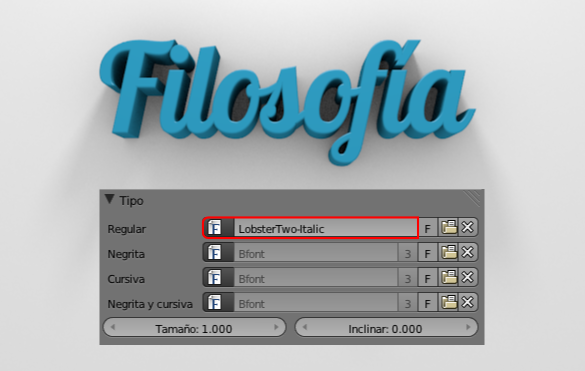

Cambio de tipografía
Para cambiar la tipografía de un objeto de texto ya creado nos dirigimos a su panel a la botonera Tipo. Allí encontramos el habitual icono de la carpetita para acceder al explorador de archivos y cargar la fuente que nos interese.
Por ejemplo, en esta imagen hemos usado una fuente libre llamada Lobster (www.impallari.com/lobster).
Instalar una fuente
La tipografía con la que se crea el texto de ejemplo está incluida en Blender y se denomina Bfont. Sin embargo lo habitual será que queramos usar una de las tipografías de nuestro disco duro. Supongamos que hemos descargado una fuente:
- Lo primero es la descompresión del archivo si este estuviera en algún formato como ZIP, RAR, 7z...
- En algunos sistemas operativos con un simple doble clic sobre el archivo es suficiente para que se proceda a su instalación (le llamamos instalación a situarse en el directorio adecuado).
- Si hay que instalar manualmente, copiamos los archivos de fuentes en los directorios adecuados:
- Windows. C:/WINDOWS/fonts
- Linux. usr/share/fonts (para todos los usuarios) y Home/usuario/.fonts (para cada usuario). Las carpetas ocultas se hacen visibles en el explorador de Blender pulsando la tecla "H".
- MacOSX. /Library/Fonts
Fuentes libres para uso personal y comercial
Si el tema de las licencias es espinoso en general, en el caso de las tipografías no iba a ser menos. Cuando alguien le pone una licencia de carácter restrictivo a una fuente tipográfica en realidad lo que está haciendo es hacer privativo el nombre de la fuente exclusivamente, ya que la Ley no permite registrar un alfabeto al tratarse de un patrimonio universal.
Para despreocuparnos de estos matices legales disponemos de muchos sitios desde los que poder descargar este tipo de recursos de forma gratuita y sin vulnerar derechos de nadie ya que tienen licencias Creative Commons, Dominio publico, GNU...
Algunos sitios de descargas de fuentes tipográficas son los siguientes
- Font Squirrel (www.fontsquirrel.com)
- Dafont (www.dafont.com/es)
- Urbanfonts (www.urbanfonts.com)
- Google Web Fonts (www.google.com/webfonts). En realidad este es un repositorio para poder usar fuentes tipográficas atractivas en sitios web, pero también se pueden descargar.